import torch
from torch.utils.data import DataLoader
import torch.nn as nn
import numpy as np
from PIL import Image
import matplotlib.pyplot as plt
import os
from torchvision import transforms
from pathlib import Path
import math
from dataset import TextSegmentationDataset, IMAGE_SIZE, LARGE_SIZE
from utils import visualize_dataset_sample, demonstrate_image_preparation, demonstrate_model_with_1_image, test_model_metrics
from model import UNet
device = torch.device("cuda" if torch.cuda.is_available() else "cpu")
BATCH_SIZE = 32
LEARNING_RATE = 0.0001
TOTAL_STEPS = 32000
CHECKPOINT_INTERVAL = 100IMAGE_DIR = Path("./DIV2K_train_LR_unknown/X2")
widths = []
heights = []
for img_path in IMAGE_DIR.iterdir():
if img_path.is_file():
with Image.open(img_path) as img:
w, h = img.size
widths.append(w)
heights.append(h)
count = len(widths)
avg_width = sum(widths) / count
avg_height = sum(heights) / count
std_width = math.sqrt(sum((w - avg_width) ** 2 for w in widths) / count)
std_height = math.sqrt(sum((h - avg_height) ** 2 for h in heights) / count)
print(f"Number of images: {count}")
print(f"Average width: {avg_width:.2f} ± {std_width:.2f}")
print(f"Average height: {avg_height:.2f} ± {std_height:.2f}")Number of images: 800
Average width: 985.75 ± 101.64
Average height: 717.59 ± 125.79
dataset = TextSegmentationDataset(
root_dir="./DIV2K_train_LR_unknown/X2",
augment=True
)
print(f"Dataset size: {len(dataset)}")
print(f"Image paths found: {len(dataset.image_paths)}")Dataset size: 1000000000
Image paths found: 800
demonstrate_image_preparation(dataset)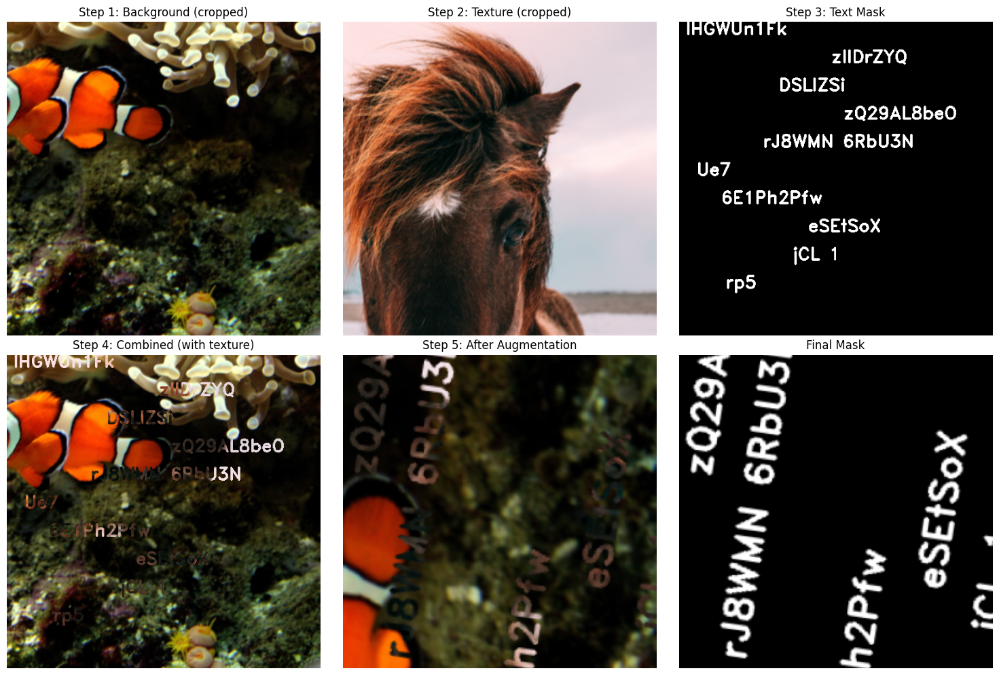
Font info: {'font_face': 2, 'font_scale': 0.9388379352586737, 'thickness': 2}
visualize_dataset_sample(dataset, idx=0, num_samples=3)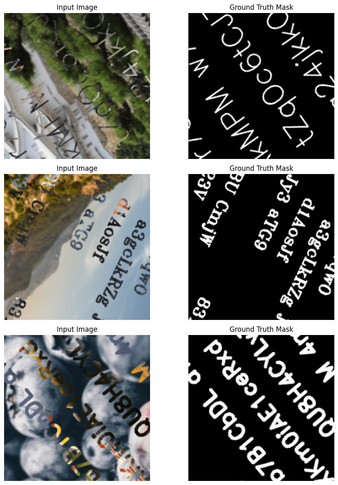
model = UNet().to(device)
print(model)
criterion = nn.BCEWithLogitsLoss()
optimizer = torch.optim.Adam(model.parameters(), lr=LEARNING_RATE)
UNet(
(down1): DownBlock(
(conv1): Conv2d(3, 32, kernel_size=(3, 3), stride=(1, 1), padding=(1, 1))
(bn1): BatchNorm2d(32, eps=1e-05, momentum=0.1, affine=True, track_running_stats=True)
(relu1): ReLU(inplace=True)
(conv2): Conv2d(32, 32, kernel_size=(3, 3), stride=(1, 1), padding=(1, 1))
(bn2): BatchNorm2d(32, eps=1e-05, momentum=0.1, affine=True, track_running_stats=True)
(relu2): ReLU(inplace=True)
(pool): MaxPool2d(kernel_size=2, stride=2, padding=0, dilation=1, ceil_mode=False)
)
(down2): DownBlock(
(conv1): Conv2d(32, 64, kernel_size=(3, 3), stride=(1, 1), padding=(1, 1))
(bn1): BatchNorm2d(64, eps=1e-05, momentum=0.1, affine=True, track_running_stats=True)
(relu1): ReLU(inplace=True)
(conv2): Conv2d(64, 64, kernel_size=(3, 3), stride=(1, 1), padding=(1, 1))
(bn2): BatchNorm2d(64, eps=1e-05, momentum=0.1, affine=True, track_running_stats=True)
(relu2): ReLU(inplace=True)
(pool): MaxPool2d(kernel_size=2, stride=2, padding=0, dilation=1, ceil_mode=False)
)
(down3): DownBlock(
(conv1): Conv2d(64, 128, kernel_size=(3, 3), stride=(1, 1), padding=(1, 1))
(bn1): BatchNorm2d(128, eps=1e-05, momentum=0.1, affine=True, track_running_stats=True)
(relu1): ReLU(inplace=True)
(conv2): Conv2d(128, 128, kernel_size=(3, 3), stride=(1, 1), padding=(1, 1))
(bn2): BatchNorm2d(128, eps=1e-05, momentum=0.1, affine=True, track_running_stats=True)
(relu2): ReLU(inplace=True)
(pool): MaxPool2d(kernel_size=2, stride=2, padding=0, dilation=1, ceil_mode=False)
)
(bottleneck_conv1): Conv2d(128, 256, kernel_size=(3, 3), stride=(1, 1), padding=(1, 1))
(bottleneck_bn1): BatchNorm2d(256, eps=1e-05, momentum=0.1, affine=True, track_running_stats=True)
(bottleneck_relu1): ReLU(inplace=True)
(bottleneck_conv2): Conv2d(256, 256, kernel_size=(3, 3), stride=(1, 1), padding=(1, 1))
(bottleneck_bn2): BatchNorm2d(256, eps=1e-05, momentum=0.1, affine=True, track_running_stats=True)
(bottleneck_relu2): ReLU(inplace=True)
(up1): UpBlock(
(upsample): ConvTranspose2d(256, 128, kernel_size=(2, 2), stride=(2, 2))
(conv1): Conv2d(256, 128, kernel_size=(3, 3), stride=(1, 1), padding=(1, 1))
(bn1): BatchNorm2d(128, eps=1e-05, momentum=0.1, affine=True, track_running_stats=True)
(relu1): ReLU(inplace=True)
(conv2): Conv2d(128, 128, kernel_size=(3, 3), stride=(1, 1), padding=(1, 1))
(bn2): BatchNorm2d(128, eps=1e-05, momentum=0.1, affine=True, track_running_stats=True)
(relu2): ReLU(inplace=True)
)
(up2): UpBlock(
(upsample): ConvTranspose2d(128, 64, kernel_size=(2, 2), stride=(2, 2))
(conv1): Conv2d(128, 64, kernel_size=(3, 3), stride=(1, 1), padding=(1, 1))
(bn1): BatchNorm2d(64, eps=1e-05, momentum=0.1, affine=True, track_running_stats=True)
(relu1): ReLU(inplace=True)
(conv2): Conv2d(64, 64, kernel_size=(3, 3), stride=(1, 1), padding=(1, 1))
(bn2): BatchNorm2d(64, eps=1e-05, momentum=0.1, affine=True, track_running_stats=True)
(relu2): ReLU(inplace=True)
)
(up3): UpBlock(
(upsample): ConvTranspose2d(64, 32, kernel_size=(2, 2), stride=(2, 2))
(conv1): Conv2d(64, 32, kernel_size=(3, 3), stride=(1, 1), padding=(1, 1))
(bn1): BatchNorm2d(32, eps=1e-05, momentum=0.1, affine=True, track_running_stats=True)
(relu1): ReLU(inplace=True)
(conv2): Conv2d(32, 32, kernel_size=(3, 3), stride=(1, 1), padding=(1, 1))
(bn2): BatchNorm2d(32, eps=1e-05, momentum=0.1, affine=True, track_running_stats=True)
(relu2): ReLU(inplace=True)
)
(final_conv): Conv2d(32, 1, kernel_size=(1, 1), stride=(1, 1))
)
CHECKPOINT_DIR = "./checkpoints"
RESUME_CHECKPOINT = "./checkpoints/model.pth"
os.makedirs(CHECKPOINT_DIR, exist_ok=True)
train_losses = []
step = 0
if RESUME_CHECKPOINT is not None and os.path.isfile(RESUME_CHECKPOINT):
checkpoint = torch.load(RESUME_CHECKPOINT, map_location=device)
model.load_state_dict(checkpoint["model_state_dict"])
optimizer.load_state_dict(checkpoint["optimizer_state_dict"])
train_losses = checkpoint.get("train_losses", [])
step = checkpoint.get("step", 0)
model.train()
print("Starting training...")
while step < TOTAL_STEPS:
batch_images = []
batch_masks = []
for _ in range(BATCH_SIZE):
image, mask = dataset[0]
batch_images.append(image)
batch_masks.append(mask)
images = torch.stack(batch_images).to(device)
masks = torch.stack(batch_masks).to(device)
optimizer.zero_grad()
outputs = model(images)
loss = criterion(outputs, masks)
loss.backward()
optimizer.step()
train_losses.append(loss.item())
step += 1
if step % CHECKPOINT_INTERVAL == 0:
checkpoint = {
"step": step,
"model_state_dict": model.state_dict(),
"optimizer_state_dict": optimizer.state_dict(),
"train_losses": train_losses,
}
torch.save(checkpoint, RESUME_CHECKPOINT)
print(f"Step {step}/{TOTAL_STEPS} - Loss: {loss.item():.6f} - Checkpoint saved")
if step % 10 == 0:
print(f"Step {step}/{TOTAL_STEPS} - Loss: {loss.item():.6f}")
print("Training completed!")file_path = "./checkpoints/train_losses.txt"
with open(file_path, "r") as f:
train_losses = [float(line.strip()) for line in f if line.strip()]
train_losses = np.array(train_losses)
N = 100
trim_len = len(train_losses) // N * N
train_losses = train_losses[:trim_len]
train_losses_avg = train_losses.reshape(-1, N).mean(axis=1)
steps_train = np.arange(N, len(train_losses) + 1, N)
plt.figure(figsize=(12, 5))
plt.plot(steps_train, train_losses_avg)
plt.xlabel("Training Steps")
plt.ylabel("Loss")
plt.title("Training Loss (averaged per 100 steps)")
plt.grid(True)
plt.show()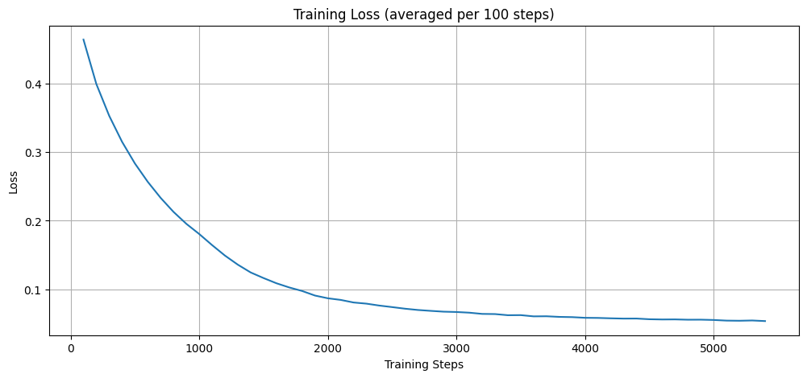
model1000 = UNet().to(device)
model1000.load_state_dict(torch.load("./checkpoints/model1000.pth", map_location=device))
model1000.eval()
model2000 = UNet().to(device)
checkpoint = torch.load("./checkpoints/model2000.pth", map_location=device)
model2000.load_state_dict(checkpoint["model_state_dict"])
model2000.eval()
model3240 = UNet().to(device)
checkpoint = torch.load("./checkpoints/model3240.pth", map_location=device)
model3240.load_state_dict(checkpoint["model_state_dict"])
model3240.eval()
model5320 = UNet().to(device)
checkpoint = torch.load("./checkpoints/model5320.pth", map_location=device)
model5320.load_state_dict(checkpoint["model_state_dict"])
model5320.eval()
demonstrate_model_with_1_image(model4320, dataset, device)
demonstrate_model_with_1_image(model4320, dataset, device)
demonstrate_model_with_1_image(model4320, dataset, device)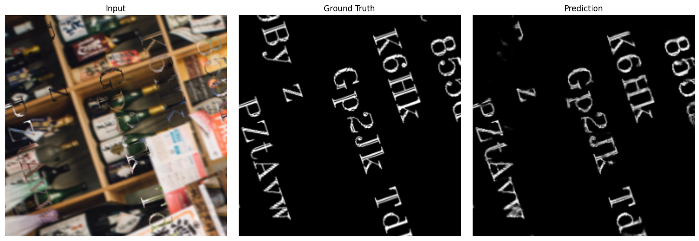
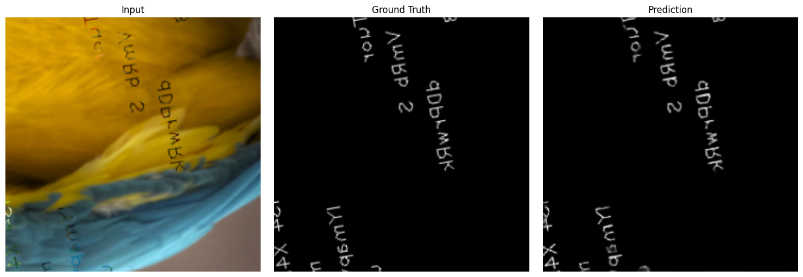
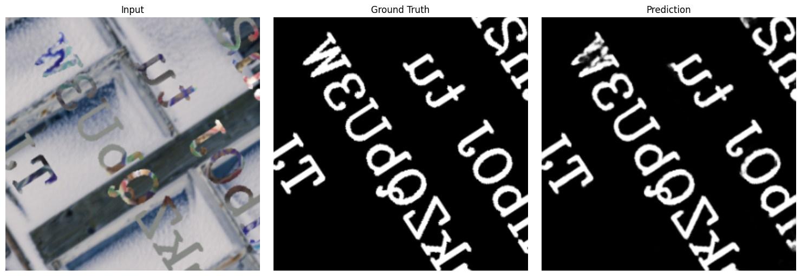
test_model_metrics(model1000, dataset, device, num_test_images=100)
test_model_metrics(model2000, dataset, device, num_test_images=100)
test_model_metrics(model3240, dataset, device, num_test_images=100)
test_model_metrics(model5320, dataset, device, num_test_images=1000)
models = [1000, 2000, 3240, 5320]
iou = [0.5404, 0.6132, 0.6730, 0.6753]
dice = [0.6696, 0.7410, 0.7885, 0.7895]
plt.plot(models, iou, marker='o', label='IoU')
plt.plot(models, dice, marker='o', label='Dice')
plt.xlabel("Model")
plt.ylabel("Score")
plt.legend()
plt.show()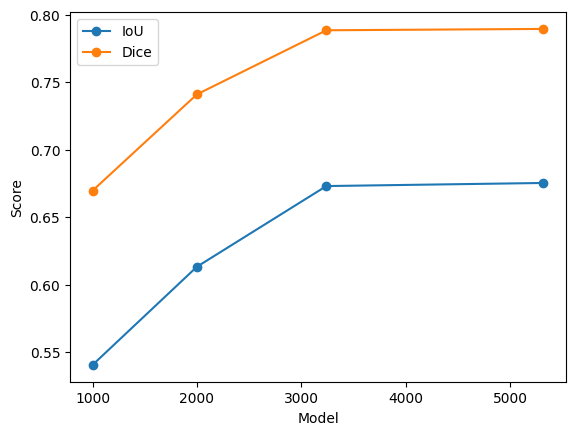
image1 = "./images/coca_cola.jpeg"
image2 = "./images/coca_cola_2.jpg"
image3 = "./images/santa.png"
demonstrate_model_with_1_image(model1000, dataset, device, image_path=image1)
demonstrate_model_with_1_image(model5320, dataset, device, image_path=image1)
demonstrate_model_with_1_image(model1000, dataset, device, image_path=image2)
demonstrate_model_with_1_image(model5320, dataset, device, image_path=image2)
demonstrate_model_with_1_image(model1000, dataset, device, image_path=image3)
demonstrate_model_with_1_image(model5320, dataset, device, image_path=image3)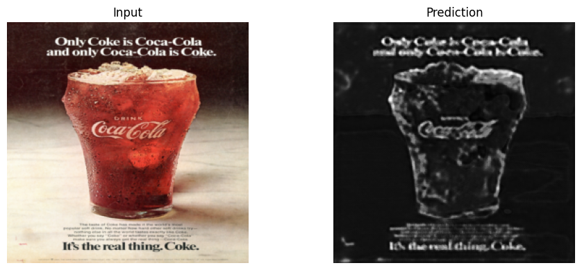
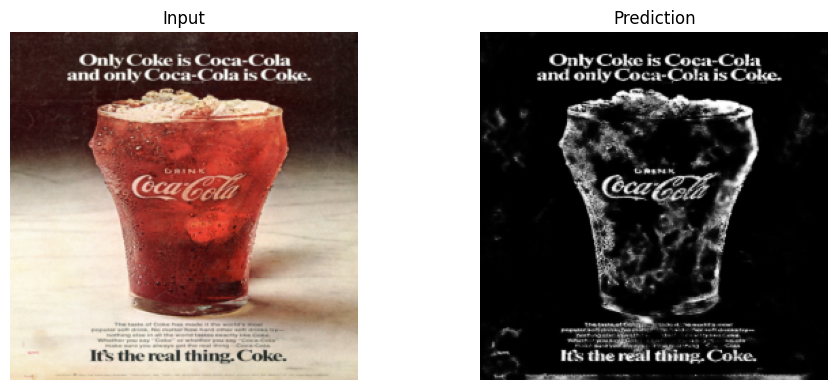
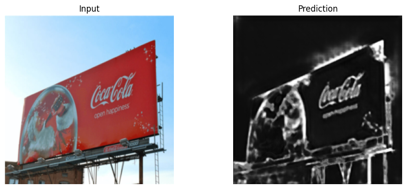
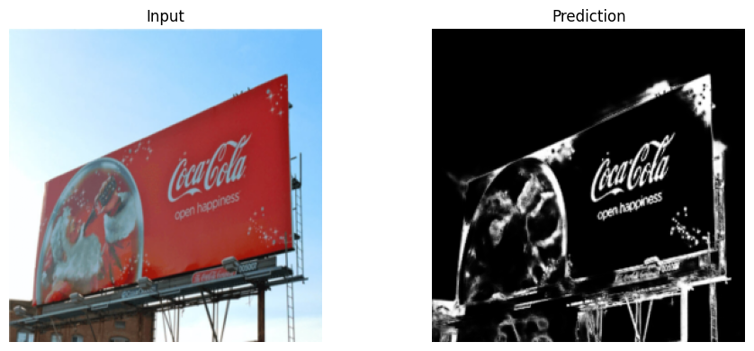
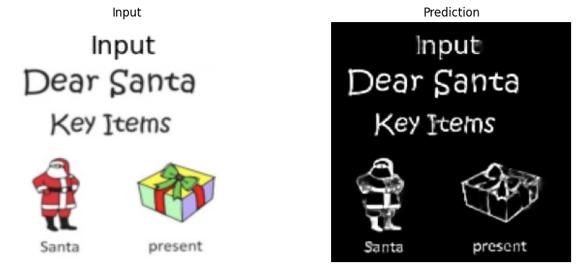